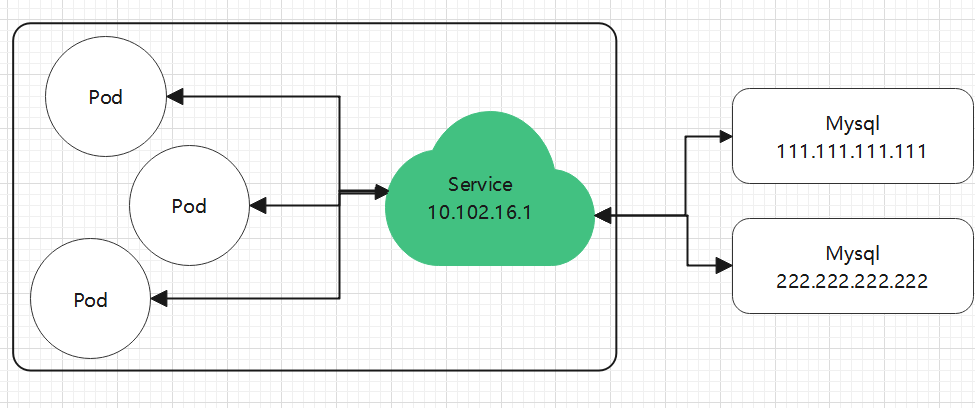

4.2 Endpoint
当我们为一个 Deployment 等对象创建一个 Service 时，Service 会自动创建 Endpoint。
我们查看默认命名空间的 Endpoint：
kubectl get endpoints
NAME ENDPOINTS AGE
kubernetes 10.170.0.2:6443 3d7h
nginx 192.168.56.24:80,192.168.56.25:80,192.168.56.26:80 59m
nginx-55649fd747-67twm 1/1 Running 0 5d21h 192.168.56.24
nginx-55649fd747-vntwb 1/1 Running 0 5d21h 192.168.56.25
nginx-55649fd747-wmrlv 1/1 Running 0 5d21h 192.168.56.26
可以看到，Endpoint 中的多个 IP，对应了每一个 Pod 的 IP，其显示的端口，也正是我们需要暴露的端口。Endpoint 记录了一组 Pod 的 IP 地址，当使用 Service 为 Pod 暴露网络时会从 Endpoint 中获得 Pod 的 IP 列表，以便能够将流量代理到合适的 Pod IP。
假如，公司创建了 A、B 两个开发小组，独立开发一个产品，其中 A 应用依赖 B 应用，需要通过远程访问获取 B 中的数据。由于两个小组都刚刚成立，各方面都还没有确定，我们如何在尽快为两个小组在远程调用上达成一些确定？使用 Consul 等服务注册和发现？这也太复杂了吧，而且 IP 也需要提前确定呀，也没有更简单的方法呢？
创建 Endpoint、Service
本节将介绍如何手动创建 Endpoint、Service。
创建 Service
创建一个没有选择器的 Service ，此 Service 没有绑定任何 Pod， service.yaml 文件内容如下：
apiVersion: v1
kind: Service
metadata:
name: nginx
spec:
ports:
- protocol: TCP
port: 6666
targetPort: 80
Service 跟 Endpoint 不能直接关联，两者通过
metadata.name中定义相同的名称进行区配。
应用 YAML：
kubectl apply -f service.yaml
查看 Service 和 Endpooint：
root@master:~# kubectl get svc
NAME TYPE CLUSTER-IP EXTERNAL-IP PORT(S) AGE
kubernetes ClusterIP 10.96.0.1 <none> 443/TCP 3d16h
nginx ClusterIP 10.96.204.132 <none> 6666/TCP 2s
root@master:~# kubectl get endpoints
NAME ENDPOINTS AGE
kubernetes 10.0.0.4:6443 3d17h
由于此 Service 没有定义选择器，因此 Service 不会自动创建 Endpoint，另外此 Service 没有 Pod 可用，暂时不能提供可用的服务。
但是，此时已经能够确定一个名为 nginx 的 Service 的 IP 地址，实际上此 IP 已经可以确定。我们把各个环节解耦了，我们无需先确定具体的应用，A、B 两个开发组，可以创建一个空的 Service，确定了 IP 和端口，然后 A、B 组继续开发应用，待 B 组开发完成后，直接部署 Pod；而 A 组可以在 B 应用没有开发完成前，就可以确定要使用的 IP。在这里，我们假设 B 组的应用叫 nginx。
创建应用
现在 B 组开发出了应用的雏形，可以使用一部分功能了，那么要先部署到云端，让 A 组连接测试。注意，B 组的应用不需要部署到 Kubernetes 中，只要能够知道此应用的 IP 和端口即可。
我们随便找台 Worker 或者 Master 节点，创建一个 nginx 容器：
docker run -itd -p 80:80 nginx:latest
为什么不用 Pod，直接创建容器？因为我们处于开发阶段，如果把 nginx 改成 mysql，我们要 Debug 呢？测试自己的数据库呢？要模拟数据呢？如果直接使用 Pod，调试会比较麻烦，我们在生产时再通过 Deployment 创建应用，但是此时我们可以使用 Docker 部署自己的数据库或者本地应用，Docker 调试比较容易，同时也很容易操作。当然，去掉 Docker 也是可以的。
总之，我们创建了 Service，可以提供了抽象，至于怎么提供这个服务，我们可以使用 Pod ，也可以直接使用 Docker，也可以在服务器中直接使用命令启动程序而不使用容器。总之，我们目前把多个环节解耦了，A 组只需要关心通过 Service 中的 IP 和端口能够访问到 B 应用即可；对应 B 组，其开发的应用还处于迭代中，直接上 Kubernetes ，不是一个好选择，可以临时使用 Docker 快速部署。
在前面，Docker 已经部署完成了，接着查询这个容器的 ip，：
docker inspect {容器id} | grep IPAddress
笔者得到的是结果是"IPAddress": "172.17.0.3"，我们可以在当前服务器中使用 curl 172.17.0.3 ，测试是否能够访问 nginx，如果没问题我们来进行下一步操作。
创建 Endpoint
现在，我们创建了 Service，能够给 A 组的应用提供一个 IP 和端口，同时 B 组也提供了一个临时测试的后端(什么形式都行)，但是现在 Service 还没有关联这个后端，暂时不能通过 Service 访问 B 应用，接下来我们将这两者关联起来。
创建一个 endpoint.yaml 文件，内容如下(注意替换ip为你容器访问ip)：
apiVersion: v1
kind: Endpoints
metadata:
name: nginx
subsets:
- addresses:
- ip: 172.17.0.3
ports:
- port: 80
metadata.name名称必须跟 Service 一致，否则不会相区配。
然后应用此 yaml：
kubectl apply -f endpoint.yaml
查看 Endpoint：
kubectl get endpoints
# 不能填写成 endpoint
NAME ENDPOINTS AGE
nginx 172.17.0.3:80 7s
然后访问 Service 中的 IP：
curl 10.96.204.132:6666

如果 Endpoint 需要跟踪多个 IP (多个 Pod 或者容器或者应用)，可以使用：
- addresses:
- ip: 172.17.0.2
- ip: 172.17.0.3
- ip: 172.17.0.4
... ...
我们定义好 Service 和 Ednpoint 后，后续 Debug 应用时，可以手动添加实例数量，让 B 应用一直能够快速迭代。如果 B 应用开发完毕，则应该使用 Pod 部署。
后续使用 Pod 时，修改其 metadata，加上选择器。
metadata:
annotations:
labels:
app: ngin
name: nginx
namespace: default
连接外部服务
假如，应用依赖于 Redis 、Mysql，但是考虑了自建 Mysql 的复杂性和宕机修复难度，决定使用云平台的 Mysql 服务。
好的，现在公司买了云平台的 多节点 Mysql 服务，其中有两个主 节点，对外提供服务，其 IP 分别为：
111.111.111.111
222.222.222.222
但是，Mysql 服务在云服务器上，不在自己的 Kubernetes 集群上，我们想在集群中创建一个 Service 来对这两个 IP 进行负载均衡，那么，我们怎么在 A 应用中访问 Mysql？写死 IP？但是现在有两个 Mysql IP，代码里面只能写一个呀，这样怎么做负载均衡？
此时，还是可以使用 Service、Endpoint 的。无非就是在 Endpoint 的 IP 列表中，使用公网 IP。
- addresses:
- ip: 111.111.111.111
- ip: 222.222.222.222
... ...
- ports:
- port: 3306
这样，在集群中还是可以使用 Service 的 IP(内网)，A 应用不需要知道有多少个 Mysql 实例，也不需要知道 Mysql 的 IP 会不会变化或者某一天挂掉了，也不需要关心平衡访问 Mysql 的流量，我们只需要知道 Service 的 IP 即可。
